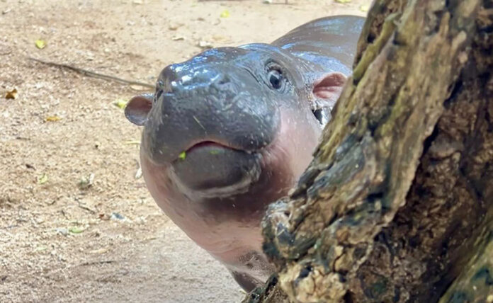
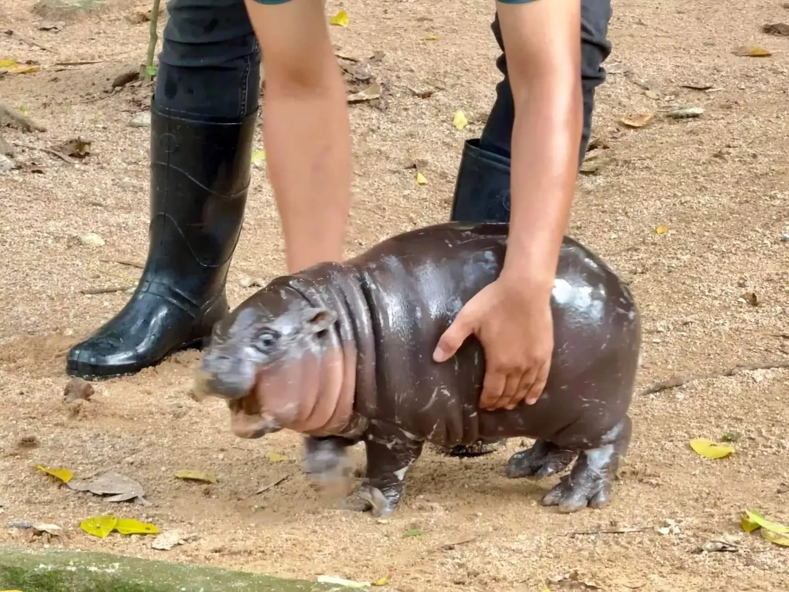

About Moo Deng

Moo Deng is a pygmy hippopotamus who became an internet sensation after her photos went viral in September 2024 due to her adorable appearance and charming personality.
She was born on July 10, 2024 to parents Tony and Jonah at Khao Kheow Open Zoo in Si Racha, Chonburi, Thailand where she currently lives.
The name Moo Deng was chosen through a public poll, with over 20,000 people voting for it. It translates to 'bouncy pork' or 'bouncy pig' in English.
Some facts about Pygmy hippopotamuses
- Pygmy hippopotamuses are smaller than their larger relatives, the common hippopotamus. They typically weigh between 160 to 270 kg.
- They are native to the forests and swamps of West Africa, particularly in countries like Liberia, Sierra Leone, and Ivory Coast.
- Pygmy hippos are more solitary than common hippos and are primarily nocturnal, spending most of their time in dense vegetation near water sources.
- They have a unique adaptation that allows them to close their nostrils and ears when submerged in water, helping them stay underwater for extended periods.
- Pygmy hippos are classified as endangered due to habitat loss and hunting, with an estimated population of fewer than 3,000 individuals in the wild.
What makes Moo Deng special
- Adorable appearance with a round and shiny body, tiny ears, orb-like eyes and short legs
- More playful and energetic than other hippopotamuses
- Active on social media, with a dedicated Instagram account showcasing her daily life
Online fame and what it has brought
In response to her viral fame, Khao Kheow Open Zoo has seen a significant increase in visitors, with many people eager to see Moo Deng in person.
The zoo has also launched a merchandise line featuring Moo Deng's image to raise funds for themselves.
Sadly, the popularity comes with some downsides. Some visitors have been reported to harass the hippo by throwing objects or splashing water at her.
The zoo has taken this seriously, installing security cameras and threatening legal action.
Despite the huge popularity online, it is sadly reported that there has been no significant impact observed in terms of funding for pigmy hippo conservation and protection.
Source:Wikipedia
Where is Moo Deng now?
Despite her internet fame becoming less prominent, over 69,000 fans visited the zoo on July 10, 2025 to celebrate Moo Deng's first birthday.
NBC news reported live from the zoo in Thailand: